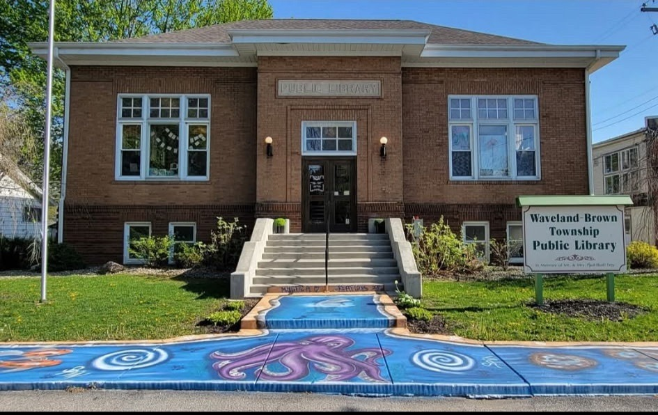

A Place to Read, Learn,
and Gather
For over a century, our historic Carnegie library has been the heart of Waveland and Brown Township — a free library for everyone, just as it was promised in 1915.
Search the Catalog (opens in new tab) Visit UsOur Mission
Information, Education & Community
The mission of the Waveland-Brown Township Public Library is to serve our community by providing information and resources for education and recreational needs. We hope to serve as a physical center where families and friends can gather, and to work closely with schools, churches, and other community groups.
What We Offer
Explore the Library
Browse the Catalog
Search our collection of books, audiobooks, movies, and more — and place holds from home.
Search now (opens in new tab)Events & Programs
Story hours, community presentations, and board meetings — see what's happening this month.
View the calendarCurbside & Delivery
Can't make it inside? Call us at 765-435-2700 to arrange curbside pickup or a book delivery.
Our servicesResearch & Learning
Free access to online databases, homework help, and local history resources.
Start researchingOur Story
A Carnegie Library, Built by the Community
The Waveland-Brown Township Public Library was built in Montgomery County, Indiana starting in the fall of 1914 using matching funds from Andrew Carnegie. The library has been serving the community since 1915 — and still operates from the original building.
Step inside and you'll find the original golden oak woodwork, the first reading tables still in use, and a painting by world-renowned artist T.C. Steele (opens in new tab) — one of Waveland's most famous sons — hanging in its intended spot above the fireplace.
Read Our Full History
Visit Us
| Monday | 9:00 – 6:00 |
|---|---|
| Tuesday | 9:00 – 6:00 |
| Wednesday | 9:00 – 6:00 |
| Thursday | 9:00 – 6:00 |
| Friday | Closed |
| Saturday | 9:00 – 1:00 |
| Sunday | Closed |
Questions? Call 765-435-2700.
“I cannot remember the books I've read any more than the meals I have eaten; even so, they have made me.” — Ralph Waldo Emerson, 1803–1882

Free for Everyone
Get Your Free Library Card
Waveland and Brown Township citizens have received free library cards since 1915 — and that remains our policy today. Stop in to sign up; all you need is proof of residence.
Plan Your Visit